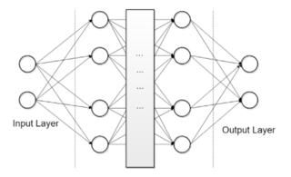
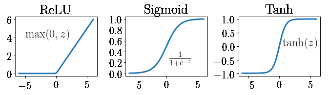
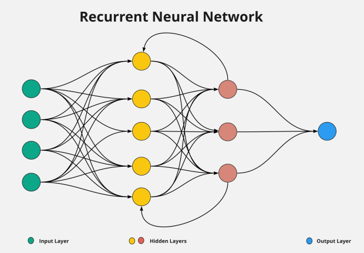

3 Methodology
3.1 Neural Networks
Given that LSTM models are an advanced form of RNN, one must first understand how RNN’s work and their limitations, so one can get an understanding of why LSTM models are needed. Before getting there, it’s worth a quick introduction into Neural Networks themselves.
Neural Networks (also known as Artificial Neural Networks or ANN’s) are based on the same principle on how the human brain works: a network of neuron’s [6]. The network improves and learns by changing the connections between each neuron, which can also be called a node. In the case of machine learning, a neural network can take a supervised set of data with class labels and create nodes based on various input variables, and optimize the connections between each node using optimal strengths to be able to accurately predict unseen data. Thus, the network is made up entirely of individual nodes and individual connections between the nodes.
A neural network must have at least one input node, at least one output node, and at least one hidden layer, which are layers of nodes between the Input and Output nodes. Often times, it will contain multiple inputs, hidden layers and outputs (Figure 4)

Figure 4: An illustration of a neural network with two input nodes in the input layer, two hidden layers with four nodes each, and two output nodes, with a spider-web of connections between them.
There are various learning techniques that one can set up for a neural network, called learning rules. The most common learning rule is backpropagation [7]. It uses gradient descent to learn the weights of each node, which are essentially the connections between the nodes. The goal of gradient descent is to take small, incremental steps meant at minimizing a loss function, such as the Mean-Squared Error (MSE), for each weight. The activation function (sometimes called the transfer function) takes those weights and defines an output based on the activation function formula. That output will then determine whether any specific neuron is activated. Neurons that are activated have their outputs fed to the next step of the training process.
There are various activation functions and their usefulness depends on various factors, including whether the data is linear or non-linear. There are three activation functions that are the most popular: Sigmoid, Tanh and ReLU. The Sigmoid function maps inputs, regardless of size, to an output ranging from 0 to 1. The Tanh function returns an output ranging from -1 to 1, while the ReLU function removes any negative part of the resulting outputs [8] (Figure 5).

Figure 5: An illustration of the three most popular activation functions.
3.1.1 Recurrent Neural Networks
Most ANN’s are feed-forward neural networks, so they are all fully connected and loop free. This means that each neuron in the network provides an input to a neuron in the following layer, never going back and sending an input to a neuron in a previous layer [8]. While this can be useful for some tasks, one of the most powerful benefits that ANN’s have is their ability to build a memory of time-series events by going back in time. This is done by having a circular connection between each layer, thus creating an Recurrent Neural Network. Unlike ANN’s, a RNN uses that circular connection to previous steps, therefore going back in time (Figure 6).

Figure 6: An illustration of a recurrent neural network. Unlike an Artificial Neural Network, an RNN contains a feedback loop between the hidden layers.
RNN’s also need to be trained differently, as backpropgation on its own does not feed any information back to previous steps. In order to properly train an RNN, we need a feedback loop to do just that. There are two methods that are most common when training an RNN: Backpropagation through time (BPTT) and Real-time recurrent learning (RTRL), the only difference between the two being how they optimize the weights [8].
During that training of an RNN, regardless of which method is used, we run into the issue of exploding and vanishing gradients. During either BPTT or RTRL, a given weight is multiplied by each input in the network. This essentially means the weight is multiplied to the power of how many inputs there are. Take an example of a stock market prediction neural network where 100 days of previous trading data act as the inputs. If a given weight is greater than 1, let’s say in this example the weight is 1.5, one would multiply 1.5 to the power of 100, resulting in an number over 400 quadrillion. Because the goal of the learning rule is to take small, incremental steps to find the optimal weights, this extremely large number will cause the gradient descent to take extremely large steps instead of finding that optimal weight, resulting in an exploding gradient [8].
This problem presents itself any time the weight is greater than 1. If you set the weight to below 1, you run into the opposite problem. Using the same stock market prediction, an example weight of 0.5 would then be multiplied to the 100th power, resulting in a number so small that it’s essentially zero. This causes the gradient descent to take steps that too small, never allowing it to find the best parameter values for the network, resulting in a vanishing gradient [8].
3.2 Long Short-Term Memory
LSTMs are an improvement on the standard RNN models desgined to deal with more complex problems. Unlike a traditional RNN (which also involve a loop),they are able to handle long-term dependencies.. LSTMs were specifically designed to overcome the issues that come with training other RNNs such as vanishing and exploding gradient issues. In order to make the required prediction, they need to process not just individual data points but the entire sequence of data.They are composed of four components; the cell,input gate, the output gate and a forget gate [1].

The gates are responsible for processing and regulating the information flowing in and out of the cell. The cell state carries the relevant information during the process of the sequence. Information is continually added to and removed from cell through the gates. The gates determine which information is important to keep or forget during the process.
The forget gate is responsible for discarding the information which is not gonna used in the next steps. It determines which information from the previous cell state is retained[9]. The closer the value of the information passed through the forget is to 0, the more likely is to be forgotten.Therefore this means that the closer the value is to 1, the more likely it is to be kept. The input gate charge of choosing which new data points to include in the cell state at a certain time step [9]. The input gate regulates the information flow by producing values between 0 and 1 using a sigmoid activation function. The output gate decides which cell state data should be carried over to the following time step and added to the network’s output[9]. It makes use of a sigmoid activation function and is essential to the LSTM’s capacity to provide outputs that are aware of context.
The sigmoid and tanh activation functions are crucial for the different gates and operations of the LSTM architecture in a typical LSTM network. Within the network, these activation functions are used to manage information flow and determine what should be updated, remembered, and forgotten.

The sigmoid function is employed in the input, output and forget gates. In the input gate it is used to calculate the values from the current input and the previous hidden state to be between 0 and 1. In the forget gate, it calculates the input from the previous hidden state and current input . In the output gate, the sigmoid function also calculates the values of the current input and previous hidden state to produce the output . The tanh function is specifically employed in the output gate to determine which information from the cell state is going to be included in the hidden state and eventually in the network's output .
3.3 Implementation
Our LSTM model for this project will be implemented in Python using the scikit-learn machine learning library and the Keras package. Keras is a high-level, deep learning API developed by Google for implementing neural networks built on top of the TensowFlow platform. Scikit-learn will be used to prepare our numeric dataset for an LSTM network, and to split our data into an 80/20 training set and testing set. The data must be scaled to achieve the best results. Large inputs tend to slow down the learning convergence. We have two options for scaling our data, normalization, and standardization. Normalization takes our data and outputs it in range between [0-1]. Standardization re-scales our data so that the mean is 0 and the standard deviation equals 1. For this project we will implement normalization. We will accomplish this by importing MinMaxScaler from the sklearn.preprocessing library. We will then create a MinMaxScaler object defining a range between 0-1, and lastly run the fit_transform method on our data set. To split our data, we will create 4 variables, LSTM_Xtrain, LSTM_Xtest, LSTM_ytrain, and LSTM_ytest to hold our training/testing sets. This will be done using the train_test_split() method that is part of the Scikit-learn library.